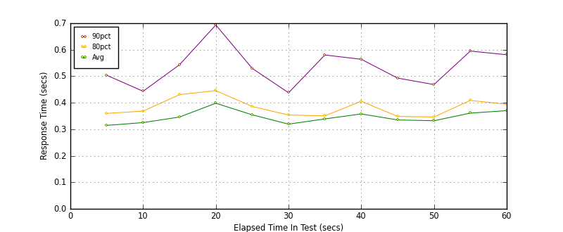
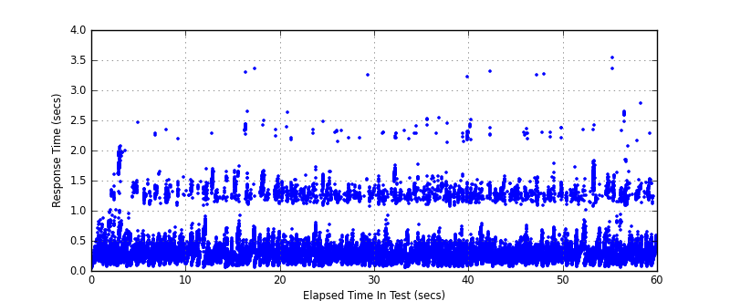
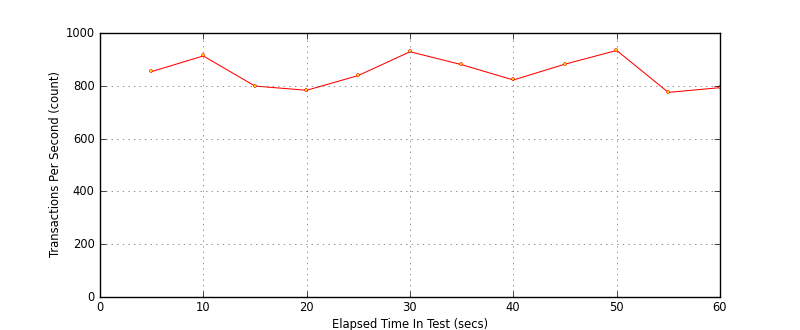

Performance Results Report
Summary
transactions: 51338
errors: 0
run time: 60 secs
rampup: 0 secs
test start: 2017-05-25 11:20:06
test finish: 2017-05-25 11:21:06
time-series interval: 5 secs
workload configuration:
| group name | threads | script name |
|---|
| user_group-10 | 20 | redis_stress.py |
| user_group-11 | 20 | redis_stress.py |
| user_group-12 | 20 | redis_stress.py |
| user_group-13 | 20 | redis_stress.py |
| user_group-14 | 20 | redis_stress.py |
| user_group-15 | 20 | redis_stress.py |
| user_group-2 | 20 | redis_stress.py |
| user_group-3 | 20 | redis_stress.py |
| user_group-1 | 20 | redis_stress.py |
| user_group-6 | 20 | redis_stress.py |
| user_group-7 | 20 | redis_stress.py |
| user_group-4 | 20 | redis_stress.py |
| user_group-5 | 20 | redis_stress.py |
| user_group-8 | 20 | redis_stress.py |
| user_group-9 | 20 | redis_stress.py |
All Transactions
Transaction Response Summary (secs)
| count | min | avg | 80pct | 90pct | 95pct | max | stdev |
|---|
| 51338 | 0.043 | 0.345 | 0.379 | 0.522 | 1.234 | 3.543 | 0.306 |
Interval Details (secs)
| interval | count | rate | min | avg | 80pct | 90pct | 95pct | max | stdev |
|---|
| 1 | 4273 | 854.60 | 0.045 | 0.315 | 0.360 | 0.504 | 0.675 | 2.465 | 0.262 |
| 2 | 4568 | 913.60 | 0.071 | 0.325 | 0.368 | 0.443 | 0.577 | 2.336 | 0.232 |
| 3 | 3995 | 799.00 | 0.055 | 0.346 | 0.430 | 0.543 | 1.171 | 2.274 | 0.275 |
| 4 | 3915 | 783.00 | 0.056 | 0.398 | 0.446 | 0.693 | 1.372 | 3.353 | 0.383 |
| 5 | 4195 | 839.00 | 0.065 | 0.355 | 0.386 | 0.530 | 1.263 | 2.633 | 0.309 |
| 6 | 4646 | 929.20 | 0.074 | 0.319 | 0.354 | 0.438 | 1.165 | 3.249 | 0.257 |
| 7 | 4404 | 880.80 | 0.052 | 0.339 | 0.351 | 0.580 | 1.275 | 2.395 | 0.330 |
| 8 | 4110 | 822.00 | 0.065 | 0.358 | 0.406 | 0.564 | 1.250 | 3.227 | 0.346 |
| 9 | 4414 | 882.80 | 0.068 | 0.335 | 0.348 | 0.493 | 1.241 | 3.316 | 0.306 |
| 10 | 4671 | 934.20 | 0.073 | 0.332 | 0.346 | 0.469 | 1.218 | 3.260 | 0.293 |
| 11 | 3878 | 775.60 | 0.064 | 0.361 | 0.409 | 0.595 | 1.271 | 2.418 | 0.317 |
| 12 | 3967 | 793.40 | 0.058 | 0.370 | 0.394 | 0.581 | 1.274 | 3.543 | 0.341 |
Graphs
Response Time: 5 sec time-series

Response Time: raw data (all points)

Throughput: 5 sec time-series
